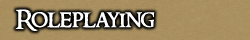

<TABLE BORDER CELLPADDING="0" background="bocimages/scrollbgdark.gif" width="100%">
	<TR>
	<!-- Header or whatever -->
	<BR>
		<TD valign="top" class="notes">
		Cove has a wide variety of positions to suit
	      everyone's style of roleplay, from the lowest peasant to the highest Captain
	      of the Baron's armed forces. They are all united in their common goals; to
	      survive and to prosper.
	      <P>
	      <B>What is Roleplay?</B> <BR>
	      Roleplaying is a particular form of gaming that adds spice and intrigue to
	      the simple pixels and mechanics of our world based in Ultima Online. As a
	      player, you interact and perform the traits and personality of your chosen
	      character; be it a tough and disciplined guardsman, or a cocky and resourceful
	      rogue. <BR>
	      It is important to remember that when you are roleplaying your character
	      that nothing affect "you" (the player), other than enjoyment. Far too many
	      times players rush out into the roleplaying world, and take things that happen
	      to their characters "personally". You're not roleplaying if you're taking
	      it personally.<BR>
	      Roleplay is indeed a mature form of gaming, and whoever you meet in this
	      realm of adventure you will always respect them OOC (Out Of Character); we
	      are, after all, "just friends" gaming together.
	      <P>
	      <B>Covian Traits</B><BR>
	      These are a few traits and characteristics that Covians have developed following
	      the Orc occupation of their town and the full recovery accomplished by the
	      Baronship.
	      <P>
	      * Covians, even peasants, are hardy and tough.<BR>
	      * Covians respect and honour the Baron.<BR>
	      * Covians are faithful Avatarians once more!<BR>
	      * Covians accept Dwarves, Elves, and some other creatures.<BR>
	      * Covians hate and persecute Drow.<BR>
	      <P>
	      For a more detailed guide on Covian traits and characteristics, please read Captain Raiden Morana's excellent 
	      <a href="http://cove.sugeworld.com/forum/index.php?topic=15975.0">'Spirit of Cove ~ A Guide To Roleplaying Your Covian'</a>.
	      <P>
	      <B>OOC Principles</B><BR>
	      Here are some principles that apply to all Covians, and must be taken into
	      consideration when roleplaying your character;
	      <P>
	      <I>* Line of Sight<BR>
	      </I> Your character cannot see through walls, nor behind him/herself. In
	      addition, your character cannot see "name tags" that float above the head
	      of other characters' heads. It may be useful to switch off "show approaching
	      player names"; however, not necessary.<BR>
	      <BR>
	      <I>* Power Emoting<BR>
	      </I>Power Emoting is not allowing the third party a chance to roleplay; in
	      others, you already decide their fate (e.g. *kicks in head*, *knocks out*).
	      It is preferred that you leave the other character(s) with options (e.g.
	      *tries to kick in head*, *tries to knock out*). However, the only time when
	      power emoting is "slightly" acceptable is when a prisoner is taken, as this
	      character shall be so weakened that there is little they can do to fight
	      back.<BR>
	      <BR>
	      <I>* Super Emoting<BR>
	      </I>Super Emoting is when a player creates their character much like Superman,
	      without weakness or fault (e.g. *dodges slow punch*, *feels no pain from
	      hit*). These sort of emotes are poor roleplay, as the character cannot dodge
	      EVERY punch, and are also extremely irritating OOC. Refrain from doing
	      these.<BR>
	      <BR>
	      <I>* Party Use<BR>
	      </I>Party is an excellent system to use when you need to tell another party
	      something important OOC (e.g. "Afk! Someone's at the door!"). With the party
	      system there is no need for the notorious (brackets) talks, which considerably
	      ruins the atmosphere when used. However, when on party try to keep OOC chatter
	      to a minimum, after all you did log on to "roleplay" and not catch up OOC
	      with old friends (use ICQ for that). <BR>
	      <BR>
	      <I>* PVP</I><BR>
	      Combat and battles are an excellent addition to roleplay. However, they must
	      not be abused! Cove is at heart a roleplaying guild, and therefore do not
	      randomly go PKing other guilds or spamming your desire to - else ye will
	      be removed.<BR>
	      <BR>
	      <I>* Roleplayed Injuries</I><BR>
	      This is an optional combat attribute, but can add a lot of fun to your
	      roleplaying experience. If you are a guardsman and take part in a major battle
	      that does not go well, consider the possibility of a rather nasty poisoning,
	      or the breaking of a bone. Here are some other ideas (forwarded by Darath
	      Mithar);<BR>
	      * Minor cuts and scratches <BR>
	      * Larger gash, minimal blood loss (perhaps requires stitching) <BR>
	      * Head injury, concussion, memory loss, drowsiness <BR>
	      * Re-opening of an old wound <BR>
	      * Serious injury, large loss of blood, slipping in and out of consciousness,
	      requires prolonged treatment. <BR>
	      <BR>
	      <I>* Guildtags</I><BR>
	      An OOC rule of CoRE is that all guildtags are displayed. However, you must
	      take into consideration whether guilds would want their guildtags displayed
	      IC (In Character). For instance, the Trinsic Militia will be proud and shall
	      wear their guildtags or "badges" to show all the public. However, rogue guilds
	      such as the Highwaymen, or the Brigands of the Fort would not do such a thing;
	      therefore, treat them as roaming adventurers or civilians.
	      <P>
	      <B>Covian Language</B><BR>
	      There is no distinct Covian accent as peasants and Army recruits have flocked
	      from all over Britannia to join the Baronship. Therefore, it is up to the
	      player on how the character speaks, but as always mIRC slang is not allowed.
	      <P>
	      <I>* Converting Slang into Roleplay</I>
	      <TABLE width="400" cellspacing="2" cellpadding="0" class="notes">
		<TR>
		  <TD valign="top">:)</TD>
		  <TD valign="top">*smiles*, *grins*, *smirks*</TD>
		</TR>
		<TR>
		  <TD valign="top">:(</TD>
		  <TD valign="top">*frowns*, *looks sad*</TD>
		</TR>
		<TR>
		  <TD valign="top">lol, rofl</TD>
		  <TD valign="top">*laughs*, *chuckles*, *giggles*</TD>
		</TR>
		<TR>
		  <TD valign="top">u</TD>
		  <TD valign="top">You, Ye, Yer</TD>
		</TR>
		<TR>
		  <TD valign="top">thx</TD>
		  <TD valign="top">Thanks, Thankye</TD>
		</TR>
		<TR>
		  <TD valign="top">kk</TD>
		  <TD valign="top">Okay, Alright, Fine</TD>
		</TR>
		<TR>
		  <TD valign="top">Blue</TD>
		  <TD valign="top">Adventurer, Civilian</TD>
		</TR>
		<TR>
		  <TD valign="top">Guildtag</TD>
		  <TD valign="top">Badge, Insignia</TD>
		</TR>
		<TR>
		  <TD valign="top">Lag, Lost Conn</TD>
		  <TD valign="top">Mud, Fell Asleep</TD>
		</TR>
	      </TABLE>
	      <P>
	      <B><U>Additional Roleplaying Guides</U></B><BR>
	      <A href="http://uo.stratics.com/content/rp101/rping.shtml">Stratics Roleplaying Intro</A><br>
		<A href="http://cove.sugeworld.com/forum/index.php?topic=10091.0">The Covian Guide to Good Roleplay</a>
	      <P>
		</TD>
	</TR>
</TABLE>
